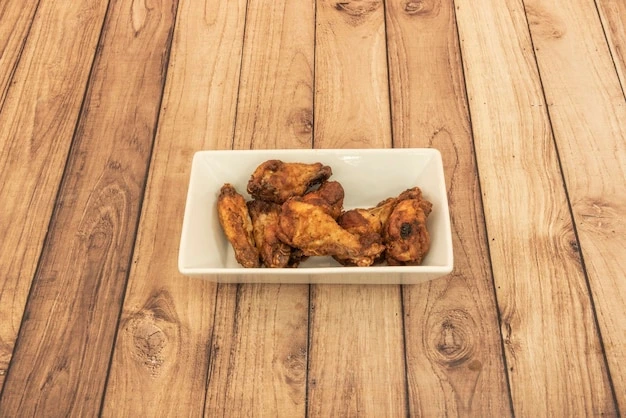

Tapas
Bar manolo
Tapa
Desarrollo de una plataforma de comercio electrónico con carrito de compras y pasarela de pago integrada.
Bar Valdueza

Tapa
Un blog donde comparto artículos sobre programación y tecnología.
Bar Luisito el chiquito

Tapa
App que muestra el pronóstico del tiempo utilizando APIs.
Bar Gavela

Tapa
Desarrollo de una plataforma de comercio electrónico con carrito de compras y pasarela de pago integrada.
Bar Gavela

Tapa
Creación de una aplicación para compartir fotos y conectar con amigos.
Bar Carlitos

Tapa
Un blog donde comparto artículos sobre programación y tecnología.
Bar Cuarentena

Tapa
Mi sitio web personal para mostrar mis proyectos y habilidades.